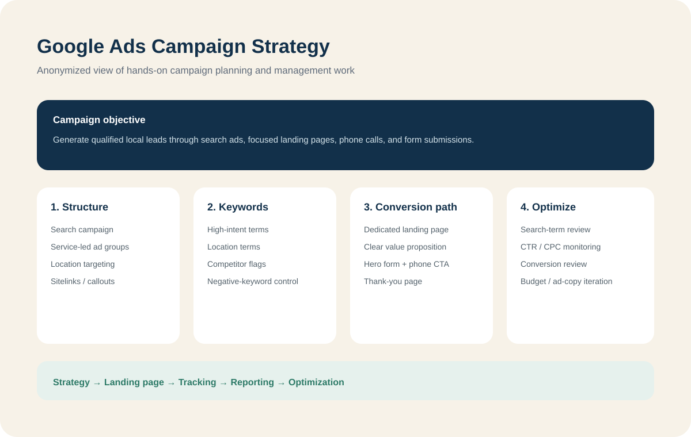

Campaign structure
Search campaign structure organized around specific services, location intent, ad groups, relevant landing pages, and useful ad assets.
My Google Ads work connects campaign structure, keyword intent, local targeting, landing-page messaging, conversion actions, and reporting instead of treating the ad account as a standalone channel.
One hands-on campaign involved a local wellness service business. Client details are removed here, but the work included campaign planning, keyword categorization, negative-keyword control, landing-page preparation, form and phone conversion paths, performance review, and reporting.

The campaign plan begins with what the business is selling, where it serves customers, what searchers actually mean, and which actions count as a lead.
Search campaign structure organized around specific services, location intent, ad groups, relevant landing pages, and useful ad assets.
Keywords are sorted by commercial intent, location intent, competitor relevance, research intent, and negative-keyword risk before they are used in the campaign.
Ads connect to focused landing pages with a clear offer, strong service relevance, phone and form actions, and a thank-you path that supports measurement.
I review paid-search performance in context: traffic quality, CTR, CPC, conversions, landing-page alignment, keyword relevance, and opportunities to reduce wasted spend.